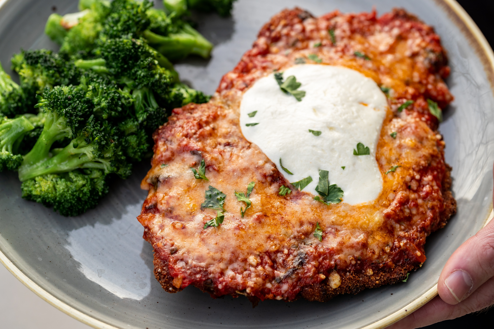

Chicken Parm

Description
Use these ingredients to make your own homemade crispy chicken parmesan.
Ingredients
- 4 boneless chicken breast halves
- salt and pepper
- 2 eggs
- 1 cup bread crumbs
- 3/4 cup grated parmesan cheese
- 2 tablespoons all-purpose flour
- 1/2 cup olive oil
- 1/2 cup tomato sauce
- 1/4 cup mozarella cut in cubes
- 1/4 cup basil
- 1/2 cup grated provolone cheese
- 2 teaspoons olive oil
Steps
- Preheat oven to 450 degrees F
-
Place 2 chicken breasts between plastic sheets. Hammer chicken with a meat mallet to a 1/2 inch thickness. Then season
with salt and pepper lightly.
- Beat eggs in a separate bowl.
- Mix 1/2 cup parmesan cheese and bread crumbs in another bowl.
- Sprinkle flour over chicken breasts through a strainer evenly covering both pieces.
-
Dip a chicken breast into the eggs and then into the bread crumbs, sticking bread crumbs to all sides. Repeat for each chicken
breast and let them sit for 15 minutes.
-
Prepare skillet on medium high heat with 1/2 inch layer of olive oil. Cook chicken in skillet until a golden brown around 2 minutes
for each side.
-
Put the lightly cooked chicken in an oven dish. Spread 2 tablespoons of tomato sauce over each breast. Then spread the same amount
of mozarella, basil, and provolone cheese on top. Layer remaining parmesan over top that and then pour 1/2 teaspoon of olive oil on top.
-
Bake in oven until cheese is browned and the chicken is not pink in the center, about 20 minutes. The center of the cooked chicken
should read at least 165 degrees F with a thermometer.